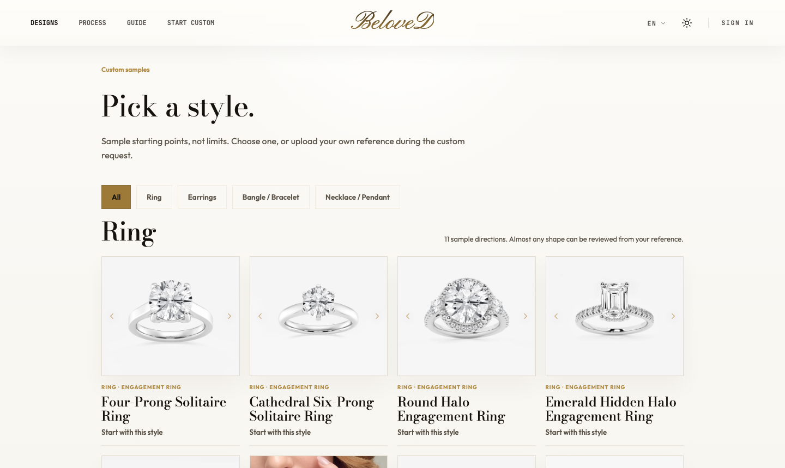
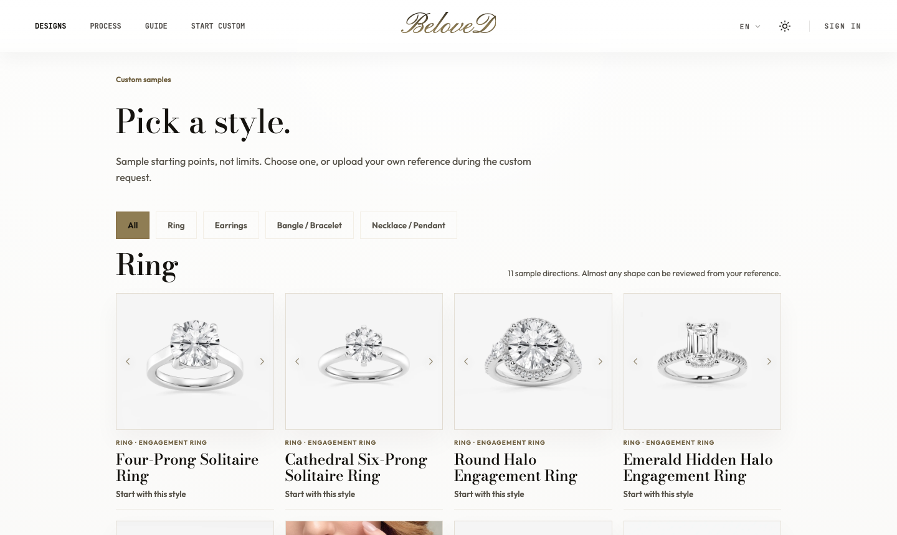
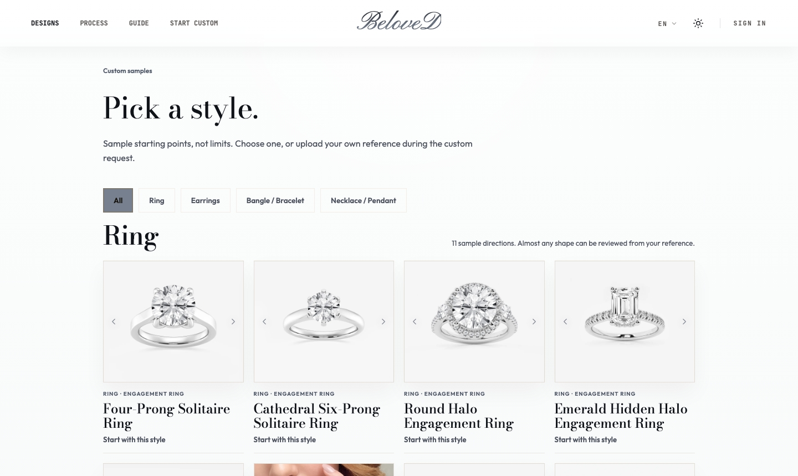
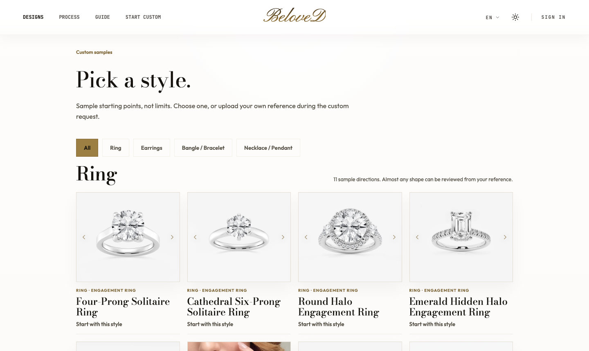

Day Mode — White Palette Candidates
현재(맨 위) 대비 3가지 화이트 계열 후보. 전부 실제 Designs 페이지에 토큰만 바꿔 입힌 실사 스크린샷입니다. 확대해서 헤더·카드·칩 색을 비교해 보세요.




현재(맨 위) 대비 3가지 화이트 계열 후보. 전부 실제 Designs 페이지에 토큰만 바꿔 입힌 실사 스크린샷입니다. 확대해서 헤더·카드·칩 색을 비교해 보세요.



